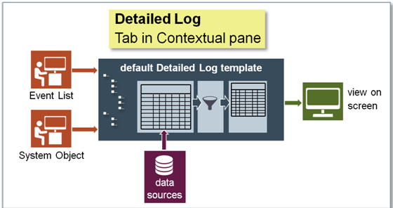
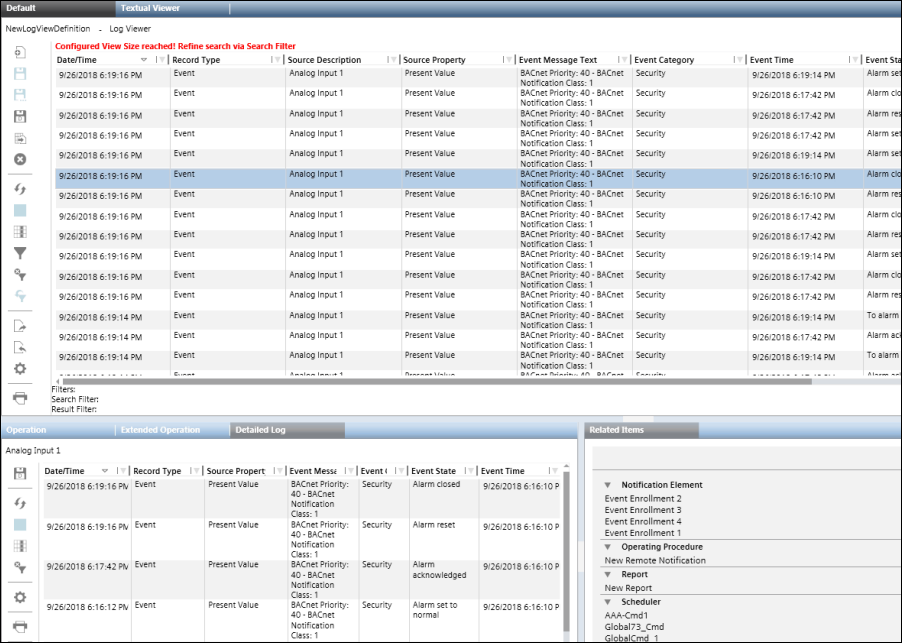

Detailed Log Tab

You can view information related to system activities and events through the Detailed Log tab.
The information displayed in the Detailed Log tab is related to the following:
- An object selected from System Browser: When you select an object from the System Browser, the Detailed Log tab displays the latest 100 activities for that object.
- An object is selected from any application, such as Graphics, Trends, Textual Viewer, or Reports:
If you select an object from any application, the Detailed Log tab displays the latest 100 activities and event log records for the object. - An activity or event type record is selected from the log view:
When you select an activity type record from a log view, the latest 100 activities and event logs for the selected object display in the Detailed Log tab.
However, if an event type record is selected, the details of the selected event including the different state changes of the event and the user activities performed in context of the event
are displayed in the Detailed Log tab of Event List, Investigative Treatment, and Assisted Treatment windows. - Event handling: When you select an event from the Event List, the details of the selected event including the different state changes of the event and the user activities performed
in context of the event are available in the Detailed Log tab of Event List, Investigative Treatment, and Assisted Treatment windows.
The Detailed Log tab however, does not display any information if you have selected more than one object.
You can customize the information displayed in the Detailed Log tab by
- Applying result filters on columns other than Date/Time
- Applying result filters on Date/Time columns
- Selecting columns to be displayed
- Hiding columns
- Sorting log entries
- Reordering and resizing Columns
By default, the following information displays for activity and event type data in the Detailed Log tab.

NOTE:
Values are displayed as per value scaled units (if configured). For more information, see Value Scale Units. You can view records for only those event categories for which you have Show rights.
Record Type - Activity | Record Type - Event |
Date/Time | Date/Time |
Source Property | RecordType |
LogType | Source Property |
Action Details | Event Message |
Action | Event Category |
Value | Event Time |
Previous Value | Event Cause |
Quality | Event ID |
Previous Quality | Value |
Unit | Unit |
Action Result | User |
User | Validation Profile |
Validation Profile | Object Version |
Audit Trail | Event Details |
Object Version | Category Priority |
Comment |
|
Reference Time |
|
Supervisor |
|
You can also save the settings in the Detailed Log tab as default template.
For example, you can create individual customized templates for displaying activity and event information by specifying the respective columns, their order and size, and by applying sorting on the data displayed.
Filters applied are not retained in the default template.
In a Distributed System, the Detailed Log tab displays the default template of the system that is associated with the currently selected object.

| Name | Description |
Save As Default | Saves the selected columns in the Detailed Log tab as a default template. | |
| Refresh | Refreshes the data displayed in the Detailed Log tab. |
| Stop Execution | Stops the execution of the log view in the Detailed Log tab. |
| Select Columns | Displays the Select Columns dialog box that allows you to select the columns to display in the Detailed Log tab. |
| Remove all Result Filters | Removes all the result filters applied to the log data in the Detailed Log tab. |
| Configuration | Displays the Configuration dialog box that allows you to display the date and time values in the Detailed Log tab till milliseconds. |
| Displays the Print dialog box that allows you to print the log data displayed in the Detailed Log tab. |